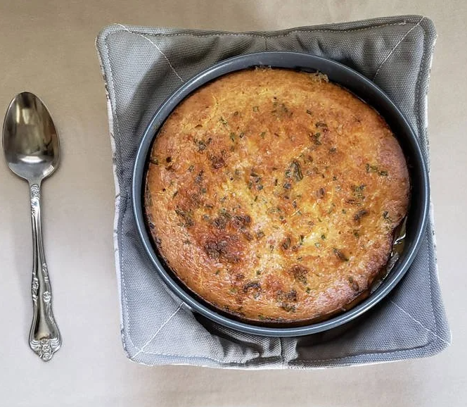

Deathclaw Wellington

Description
"Deathclaw Wellington" is a fictional recipe inspired by the post-apocalyptic world of the Fallout video game series. This recipe, like many others in the game, combines the concept of traditional dishes with ingredients available in the wasteland.
Ingredients
- 1 Deathclaw steak (or substitute with a thick cut of brahmin meat)
- 1 roll of pre-made puff pastry dough (if available)
- 1 cup of wild mushrooms (such as glowing fungus or brain fungus)
- 1 small onion, finely chopped
- 2 cloves of garlic, minced
- 2 tablespoons of butter or oil (if butter is unavailable)
- Salt and pepper to taste
- Optional: Nuka-Cola reduction sauce (a sweet and tangy glaze)
Steps
- Prepare the Deathclaw Steak:
- If you're lucky enough to have a Deathclaw steak, season it with salt and pepper. If not, a thick brahmin steak can be used as a substitute.
- In a skillet or pan, heat some butter or oil over medium-high heat. Sear the steak on both sides until it's browned but still rare in the center. Remove from heat and set aside.
- Saute the Mushroom and Onion Mixture:
- In the same skillet or pan, add more butter or oil if needed. Saute the finely chopped onion and minced garlic until they become translucent and fragrant.
- Add the wild mushrooms to the skillet and continue to cook until they are tender and any liquid has evaporated. Season with salt and pepper to taste.
- Assemble the Wellington:
- On a clean surface, roll out the puff pastry dough into a rectangular sheet large enough to wrap the steak.
- Spread the mushroom and onion mixture evenly over the puff pastry sheet.
- Place the seared Deathclaw (or brahmin) steak on top of the mushroom mixture.
- Wrap and Seal:
- Carefully fold the puff pastry over the steak, ensuring it covers the entire steak and the mushroom mixture.
- Seal the edges by pressing them together, creating a pocket for the steak.
- Bake:
- Preheat your makeshift wasteland oven or any available oven-like device to around 375°F (190°C).
- Place the Deathclaw Wellington on a baking sheet or suitable flat surface and bake until the puff pastry turns golden brown, typically for about 25-30 minutes.
- Optional Nuka-Cola Reduction:
- While the Wellington is baking, you can make a Nuka-Cola reduction sauce by simmering Nuka-Cola (or a suitable substitute) in a pan until it thickens slightly and becomes syrupy.
- Serve:
- Once the Deathclaw Wellington is done baking, remove it from the heat source, and let it rest for a few minutes.
- Optionally, drizzle the Nuka-Cola reduction over the Wellington.
- Slice and serve your Deathclaw Wellington as a decadent and rare treat in the wasteland.